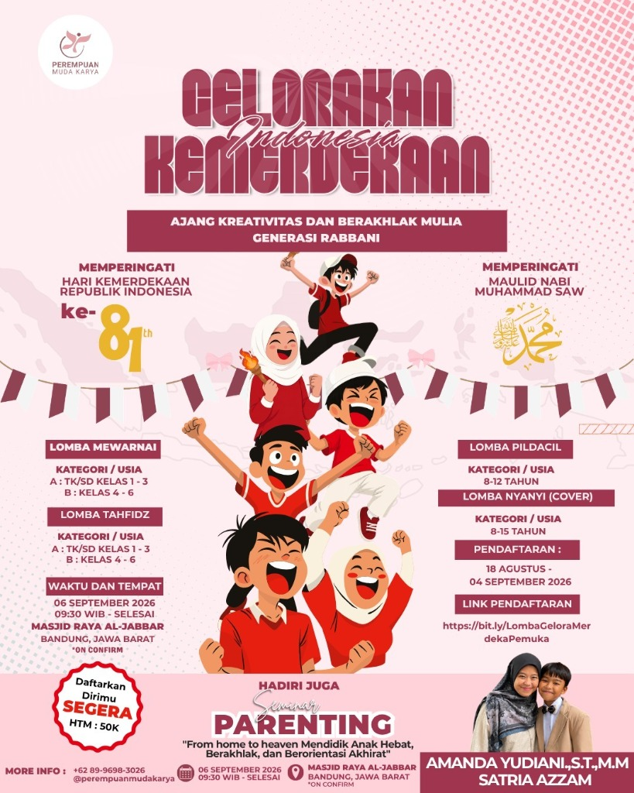

BAKAT ANAK JANGAN HANYA DISIMPAN DI RUMAH.
Ajang Kreativitas dan Berakhlak Mulia Generasi Rabbani
Jangan biarkan kreativitas, keberanian, hafalan, atau bakat menyanyi anak hanya berhenti di rumah. Saatnya mereka berani berkarya, tampil, dan berkembang!

Ada anak yang senang menggambar. Ada yang kuat menghafal Al-Qur'an. Ada yang berani berbicara di depan banyak orang. Dan ada yang memiliki suara indah serta senang bernyanyi.
Tugas kita bukan membandingkan mereka, tetapi memberi ruang agar mereka berkembang.
Mari tanamkan nilai kemerdekaan dan akhlak mulia melalui 4 pilar perkembangan anak:
Anak memiliki ruang untuk menuangkan imajinasi secara bebas dan menghasilkan karya warna-warni yang indah.
Belajar dan melatih keberanian tampil di depan umum adalah keterampilan yang sangat berguna jauh setelah lomba selesai.
Mendekatkan anak dengan Al-Qur'an, adab-adab kebaikan, serta kecintaan yang mendalam kepada Baginda Rasulullah ﷺ.
Mengajarkan anak berproses mempersiapkan diri, mengikuti tata tertib, serta berkompetisi secara sportif dan positif.
Temukan kategori lomba yang paling pas dengan minat dan keahlian unik si kecil
Untuk si kecil yang senang mencoret-coret warna, berimajinasi dengan gambar, dan berekspresi secara visual.
Lihat Detail LombaUntuk anak sholeh yang tekun menghafal Al-Qur'an dan merdu melantunkan firman-firman Allah SWT.
Lihat Detail LombaUntuk si kecil yang percaya diri berbicara di depan umum, senang bercerita, dan berdakwah menyebarkan kebaikan.
Lihat Detail LombaUntuk anak yang berbakat olah vokal, suka bernada riang, dan ingin menyenandungkan shalawat kecintaan pada Rasulullah.
Lihat Detail LombaPelajari peraturan lengkap, kriteria penilaian, dan jadwal pelaksanaan setiap perlombaan
Perlombaan offline yang diadakan langsung di salah satu masjid terindah di Bandung. Mengajak anak berkreasi mewarnai gambar bermotif kemerdekaan dan keislaman.
Perlombaan online berupa hafalan surat-surat pendek Al-Qur'an Juz 30. Peserta merekam bacaannya dalam bentuk video utuh dan mengunggahnya ke media sosial.
Perlombaan online pidato dai cilik. Melatih kemampuan berbicara, retorika Islami, serta ekspresi percaya diri dalam membawakan pesan moral yang baik.
Lomba menyanyi lagu religi Islam cover. Memberikan wadah bagi anak-anak untuk melatih keahlian bernyanyi secara Solo (tunggal) atau Duo (berdua) dengan aransemen yang sopan.
Apresiasi piala dan bingkisan menarik disiapkan untuk Juara 1, 2, dan 3 di setiap cabang lomba!
Piala Kejuaraan + Sertifikat Cetak + Merchandise Menarik
Piala Utama + Sertifikat Cetak + Bingkisan Eksklusif PMK
Piala Kejuaraan + Sertifikat Cetak + Bingkisan Alat Tulis Lengkap
Karena hadiah terbaik bukanlah piala yang dibawa pulang, melainkan rasa berani dan pengalaman luar biasa yang tumbuh di dalam jiwa si kecil.
"From home to heaven: Mendidik Anak Hebat, Berakhlak, dan Berorientasi Akhirat"
Jangan tunda kesempatan emas ini. Mari persiapkan langkah pendaftaran si kecil sekarang!
Sesuaikan dengan minat, bakat, serta kategori kelompok usia anak Ayah & Bunda.
Isi formulir Google Form pendaftaran secara lengkap dan teliti.
Lakukan pembayaran biaya pendaftaran pendaftaran sebesar Rp50.000 per cabang lomba.
Unggah lampiran struk transfer Anda ke formulir pendaftaran sebagai bukti validasi.
Mulai berlatih mewarnai, menghafal, membaca naskah, atau merekam lagu religi terbaik.
Daftarkan langsung melalui portal terpadu Google Form resmi kami.
Semakin cepat mendaftar, Ayah & Bunda memiliki waktu lebih banyak untuk membimbing dan mempersiapkan latihan anak secara maksimal.
*Pendaftaran akan ditutup otomatis ketika kuota kapasitas pendaftaran terpenuhi.
Menjawab beberapa keraguan dan pertanyaan Ayah & Bunda seputar perlombaan
Peserta adalah anak-anak dengan batasan kelompok usia yang disesuaikan pada ketentuan masing-masing cabang lomba (mulai tingkat TK hingga usia 15 tahun).
Tidak. Hanya Lomba Mewarnai yang diadakan secara offline bertempat di Masjid Raya Al-Jabbar, Bandung. Cabang lomba lainnya (Tahfidz, Pildacil, dan Nyanyi Islami) diselenggarakan secara online dengan metode pengumpulan video via unggahan Instagram.
Biaya pendaftaran (HTM) adalah sebesar Rp50.000 untuk setiap cabang lomba yang diikuti oleh masing-masing peserta.
Untuk Lomba Tahfidz dan Pildacil, video wajib diserahkan tanpa melalui proses penyuntingan (no-edit / no-cut). Untuk Lomba Nyanyi Islami, video harus rekaman asli terbaru yang tidak pernah diterbitkan sebelumnya atau dilombakan di tempat lain.
Juara 1, 2, dan 3 pada masing-masing cabang lomba berhak mendapatkan Piala Kejuaraan, Sertifikat Cetak Resmi, serta Merchandise eksklusif dari PMK. Seluruh peserta lain tetap mendapat E-Certificate penghargaan.
[NEED CONFIRMATION FROM PANITIA] Kami sarankan untuk menanyakan langsung kepada panitia pendaftaran melalui kontak WhatsApp resmi untuk mendapatkan konfirmasi tertulis terkait aturan kepesertaan ganda.
Jangan menunggu anak Anda percaya diri baru memberinya kesempatan untuk tampil. Berikan mereka kesempatan tampil agar perlahan mereka belajar menjadi pribadi yang mandiri dan percaya diri.
Mari bersama kita tumbuhkan generasi muda Rabbani yang kreatif, berakhlak mulia, cinta tanah air, dan cinta Rasulullah ﷺ.
HTM Rp50.000 | Kuota Sangat Terbatas